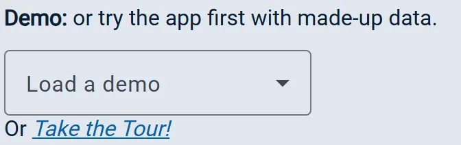
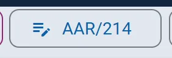
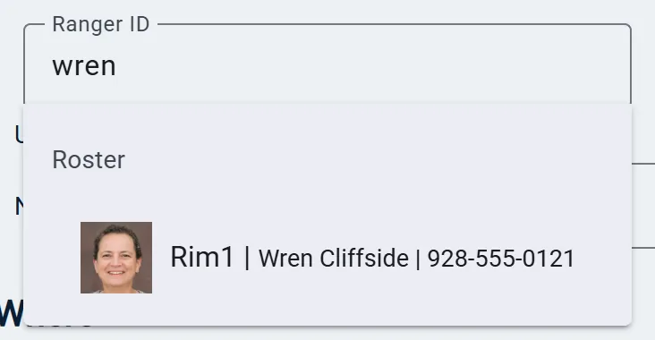
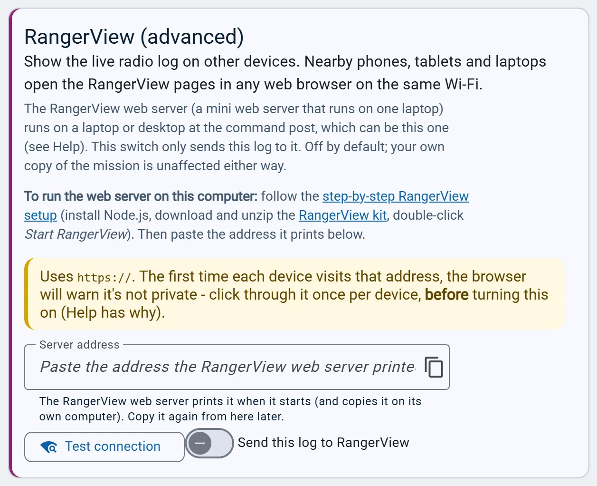
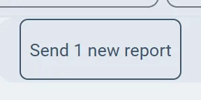

This is a directed tour of RangerTrak, to try at your own pace. It is a casual ride among friends, not a race: stop when you like, wander off the path, take a rest stop, and come back another day.
We walk you through running a small radio net, from a quiet first look to setting up and running a busy exercise without Internet, and filing the paperwork afterwards. There are three tours; pick one below.
Pick a tour
Take them in order, or jump to the one you need. Each has its own rest stops (a seat swap) and its own checklist. rest stop: swap seats viewpoint: a module with plenty of questions to talk over
Tour 1 Easy menus
The basic ride, mostly flat. Seven short modules with the menus as RangerTrak first shows them: a first look at a demo, then your own small exercise from setup to paperwork. Start here.
Rolling hills. The same app with Full menus on: every location format, tactical call signs, Setup files, and hand-overs between command posts. Takes the Rim Sweep on from Tour 1.
The long way round. Two optional extras, each needing a second device: RangerView, for key staff to watch the log, and field phones, for reports that reach the command post by file.
Everything happens in a sandboxed area of your web browser: nothing you do can reach the rest of the browser, other apps, much less anyone else. (The app can create files on your smartphone for feedback, backups and so on, but you need to share them separately.)
Especially with the demos, we encourage you to experiment, even in the "forbidden" Danger zones that protect mission data: a demo is easily replaced.
Break off and come back as you wish: your data stays as you left it, even after restarting your device or updating the app or browser. (One exception: on an iPhone, iPad, or a Mac using Safari, the browser can clear your data after about a week unused, so install RangerTrak (T4.1) and back up (T6.6) before a long break.)
Bookmark this page (rangertrak.org/tour) and return when you have more time. You can start almost anywhere, but every tour builds on the one before.
Aside from initial setup (app install, local map downloads and optional place-name lookups), you will not need Internet. Test that by turning on Airplane mode, or by turning off Wi-Fi and mobile data.
What to have on hand
Every tour: a laptop or tablet with Chrome, Edge, Firefox or Safari for the scribe. Pen and paper for whoever plays a field team.
Radios are not required, but they add realism and practice. Handhelds, or just two phones in different rooms, work for the calls.
Tour 2: a second device, or a second browser profile on the same one, for the Setup file and hand-over modules.
Tour 3: for module 21, Wi-Fi that your devices can connect to, a second laptop or a phone, and RangerView downloaded while you still have Internet (module 21, Setup). For module 22, a phone with a browser.
How the checks work
Each module opens with its setup, goals and situation, then steps. Steps marked T are Tests: do the thing, and it should happen.
Items marked Q are Questions: we want your opinion. Every item has its own number, such as T3.4 (module 3, test 4). When something is wrong, odd or slow, write the number down with one line about it. That is the whole feedback form.
Like a paper script? Print the Tour Checklist (or save it as a PDF): every ID in one list, with Pass, Fail and Note columns.
If something breaks, carry on: the next step rarely depends on it. Note the number, and if you can, press AAR/214 at the top of the page right then (module 1 shows you how) to record your observation.
Seats and rotation
Every module is a short scene for up to four people. Seats are named the same in every tour:
Seat
What you do
Scribe
At the keyboard: logs every call in RangerTrak.
Net control
The base’s voice on the radio. Solo or in pairs, the scribe does this too.
Field team
One or more people. Walk the route, read the call cards aloud, and say where you are.
Observer
Optional. Keeps time, keeps the paper ICS-309, and writes down the T and Q findings.
Each module’s Setup box says which seats it needs. Between modules there is a rest stop: swap seats, everyone moves one seat round, and the new scribe starts the next module. The two long modules (5 and 12) also have a swap in the middle.
Solo? You play every seat. Read the cards aloud anyway: saying the words is half the practice.
Radio basics
Every call card is written as a real exchange, the way a net runs, so the tour doubles as practice with the phonetic alphabet and prowords (the short standard words that keep radio traffic clear). They are practice for people: RangerTrak does not check any of it, and where your own net’s procedure differs, yours wins. The first set below is from the ARRL’s prowords page; the second is standard voice-net practice that the cards also use.
Proword
What it means
ROGER
I received your message. It does not mean "yes".
AFFIRMATIVE / NEGATIVE
Yes / no.
I SPELL
I will spell the next word letter by letter, in phonetic letters.
I SAY AGAIN
I am repeating what I just said.
FIGURES
The numbers that follow are read one digit at a time.
INITIALS
The letters that follow are initials, not a word.
BREAK
A pause between the parts of a formal message, such as its heading and its text.
THIS IS
Who is calling: "Village Base, THIS IS Hermit."
OVER
I have finished; your turn to talk.
OUT
This exchange is finished. No reply needed.
SAY AGAIN
Please repeat your last message.
WAIT / WAIT OUT
WAIT: hold on a few seconds. WAIT OUT: it will be longer; I will call you back.
CORRECTION
I made a mistake; here is the right version.
The tour brings them in a little at a time. Module 2: THIS IS, OVER, OUT, ROGER. Module 3: FIGURES. Module 4: I SPELL. Module 5: SAY AGAIN, WAIT, CORRECTION, BREAK, INITIALS. Tours 2 and 3 use them all as a matter of course.
Letter
Say
Letter
Say
Letter
Say
A
Alpha
J
Juliet
S
Sierra
B
Bravo
K
Kilo
T
Tango
C
Charlie
L
Lima
U
Uniform
D
Delta
M
Mike
V
Victor
E
Echo
N
November
W
Whiskey
F
Foxtrot
O
Oscar
X
X-ray
G
Golf
P
Papa
Y
Yankee
H
Hotel
Q
Quebec
Z
Zulu
I
India
R
Romeo
.
decimal
Figures: ZERO, ONE, TWO, THREE, FOUR, FIVE, SIX, SEVEN, EIGHT, NINER (not "nine", which can sound like "no"). All the call signs on the cards are made up, in the WZ0… pattern.
Old IDs: where did my earlier notes go?
The tour used to be nine modules in one line, and the Advanced Tour and the Village Green Drill used the numbers 11 to 15. When the tour became three tours, every ID was renumbered. This table turns an old ID into the new one: IDs that did not change are left out. A link to an old ID that no longer exists, such as #T8.3, lands on its new place by itself. Ticks from the earlier guide start fresh. The Advanced Tour’s and the drill’s card numbers (C12.x, C13.x) changed too; the cards are in each module.
Find out what RangerTrak is for, and get your bearings before you rely on it.
Situation
You’ve heard RangerTrak is a radio log that works with no Internet. Before trusting it, you look round somebody else’s mission data.
T1.1Optional. Open rangertrak.com and review its pages’ major content: What it does, Field Guide, Blog. Nothing there is needed for the tour or in the field, but it offers a different view, and reveals some less-obvious features. #
T1.2 Press Open RangerTrak (or go to rangertrak.org). The Entry page loads, and a card offers a demo. #

T1.3 Load the Grand Canyon, South Rim demo from the Entry card, or Help → Start → Load a demo. A roster and about thirty radio log entries appear. (None of our demos refer to real people or actual events, though some places are based on historic incidents. We are not linked to the National Park Service or those previous disasters.) Later, if you like, load another demo and look round again. #
T1.4 Explore the Map, Radio Log, Messages, and Rangers pages using the links at the top. (We’ll get to the Mission page later; most preferences are set there.) Each shows a different side of the demo mission; the map shows markers along the South Rim. #
T1.5 Press Help at the top of any page. It explains that screen; its link at the bottom opens the full Help page (FAQ, Your data, After mission, Feedback); look round that too. #
T1.6 Press Full menus at the top of Entry. More controls appear (Attach, for one). Press it again to go back to Easy menus. Switching never affects the data. This tour uses Easy menus; Tour 2 is the same app with Full menus on. #
T1.7Optional. Press AAR/214 at the top of any page. Use it for your After Action Review notes on the current incident or RangerTrak, or to add to your own ICS-214 activity log. Type a note and save. You return to where you were before. #

T1.8Optional. Close the browser completely, restart the device if you like, then open rangertrak.org again. The Grand Canyon demo is still there. Your data is kept in the browser’s long-term memory through an incident, and through browser and RangerTrak updates (module 6 covers the one exception). #
Q1.1 Do you feel you understand basically what RangerTrak is for? What questions do you have? Is RangerTrak a good name? #
Q1.2 How does your team call in their reports: using a call sign, a credential ID, a position title or team name? #
Q1.3 Was anything on the app’s first screen confusing or unexplained? #
Skills learned: load a demo; move between Entry, Radio Log, Map and Rangers; use Help, on each screen and the full page; switch Full menus and Easy menus; save an AAR/214 note.
Tour 1 · Module 2 Your first radio call
Setup
Verify the Grand Canyon demo is loaded. Seats: Scribe and Net control (solo, you do both), plus a Field team to read the cards if you have a partner. A laptop with a modern browser. (Smartphones can work in a pinch, but can’t edit entries, aren’t as efficient for rapid data entry, and have other limitations.)
Goals
Take a check-in and a call for help from a field team, and keep track of which calls still need action.
Situation
A team on the rim trail checks in, then finds a hiker with a twisted ankle.
Read each call aloud (or have your field team read it over the radio), then log it on the Entry page. (We call a field report or radio call an entry: same thing.) Pick any ranger from the demo roster for the Ranger ID.
Radio practice. Four words to use today: THIS IS (who is speaking), OVER (your turn), OUT (finished), and ROGER (I received that; not "yes"). The Field team says them as written; Net control answers.
Card
The call
Log it as
C2.1
Hermit: Village Base, THIS IS Hermit, OVER. Base: Hermit, Village Base, go ahead, OVER. Hermit: On the rim trail at the Village. All four present, starting our sweep. OVER. Base: ROGER, OUT.
Click the Village on Entry’s small map. Status: whatever means OK
C2.2
Hermit: Village Base, THIS IS Hermit, OVER. Base: Hermit, Village Base, go ahead, OVER. Hermit: A hiker with a twisted ankle a few hundred meters east of us. We’re with her. OVER. Base: ROGER, OUT.
Click a bit east. A status that means needs attention. Notes: the call
C2.3
Hermit: Village Base, THIS IS Hermit, OVER. Base: Hermit, Village Base, go ahead, OVER. Hermit: Ankle is wrapped, she’s walking out with us. Cancel the request. OVER. Base: ROGER, OUT.
Same spot. Back to OK
T2.1 Typing any part of a ranger’s name, ID or call sign in Ranger ID offers matches. #

T2.2 Clicking Entry’s map sets the location straight away (and copies the coordinates, in case you want them). #
T2.3 Each saved entry gets a message number, such as A031, and it shows on the Radio Log. #
T2.4 On the Radio Log, click the small disposition box at the left of C2.2’s entry. It cycles ✓, →, ! and back to empty. #
T2.5 Your three entries are on the Map, near the Village. #
T2.6 Double-click an entry to edit it. Click away to save. #
Q2.1 Time yourself on C2.3. How long from hearing the call to saved? Did anything slow you down? #
Q2.2 Were the status names the words your team would use? (They can be customized every Mission; Tour 2 shows how.) #
Skills learned: log an entry on Entry with a Ranger ID, location and status; find its message number on the Radio Log; mark it ✓, → or !; edit it.
Tour 1 · Module 3 Where exactly?
Setup
The Grand Canyon demo loaded. Seats: Scribe, Net control and Field team; solo or pairs. Internet is not needed, except for place-name lookups.
Goals
Write down where a team is, as the numbers are read to you or as a place name.
Situation
A team reads its position off a phone or a map, one digit at a time.
Entry shows latitude and longitude in decimal degrees. Type the numbers as read; west longitudes take a minus sign (−112). Log each card as a new entry, then check where it lands on the Map.
Radio practice.FIGURES means the next numbers are read one digit at a time: ZERO, ONE, TWO, THREE… NINER. Say "decimal" for the point, then read the digits.
Card
The call
Should land at
C3.1
Hermit: Village Base, THIS IS Hermit, OVER. Base: Hermit, Village Base, go ahead, OVER. Hermit: Position, FIGURES three six decimal zero five seven one north, one one two decimal one four three eight west. OVER. Base: ROGER, OUT.
Bright Angel trailhead
C3.2
Mather: Village Base, THIS IS Mather, OVER. Base: Mather, Village Base, go ahead, OVER. Mather: Position, FIGURES three six decimal zero six one seven north, one one two decimal one zero seven eight west. OVER. Base: ROGER, OUT.
Mather Point
C3.3
Hermit: Village Base, THIS IS Hermit, OVER. Base: Hermit, Village Base, go ahead, OVER. Hermit: We are at Desert View Watchtower. OVER. Base: ROGER, OUT. (a place name: needs Internet; type it in the box that says Street address, +Code, or Maidenhead grid locator)
The far east end of the rim road, about 25 km from the Village
T3.4 Under the coordinate boxes, the Derived list shows the same point in other formats. (Tour 2 lets you type in those formats too.) #
T3.5 On the Radio Log, select the three entries from this module, then open Map. You can show just those. #
T3.6 On the Radio Log, double-click the notes of one of your entries, change them and press Enter. The change is kept; its message number and time logged stay as they were. #
T3.7 Turn off Wi-Fi (hint: try Airplane mode!) and try C3.3 again. The app says the lookup needs Internet, and the coordinate boxes still work. #
T3.8 Load the Montecito debris flows (large) demo (about 400 entries). The Radio Log and Map stay usable. Load Grand Canyon again afterwards. #
Q3.1 Which format does your team actually use on the air? Was it easy to read the digits aloud and type them? #
Skills learned: enter a location in decimal degrees or as a place name; read the Derived list; edit an entry; show selected Radio Log entries on Map.
Tour 1 · Module 4 Set up your own exercise
Setup
Any text editor, for the roster file. Seats: Scribe, with an Observer or Net control if you have a partner. Internet is not needed, except for app installation, initial map downloads, or optional place-name lookups.
Goals
Get ready before heading out to the field: who is coming, when and where; downloading maps and local data; and setting mission parameters.
Situation
The park has asked your team to sweep the rim trail on Saturday. You have a roster in a spreadsheet and an hour at the kitchen table.
Save these lines as rim-roster.csv (any text editor will do; separate the fields with tabs, semicolons, commas or pipe symbols):
Name,Call sign,Cell,Team,Status
Avery Lindqvist,WZ0RIM,555-0101,Hermit,Active
Sam Okafor,WZ0SAM,555-0102,Hermit,Active
Jo Whitecloud,WZ0JO,555-0103,Mather,Active
Riley Park,,555-0104,Mather,Active
Morgan Ellis,WZ0OLD,555-0105,Mather,Retired
T4.1 Install RangerTrak now, before your own data goes in. Press Install in the header (on an iPhone or iPad: Share, then Add to Home Screen). It opens in its own window with its own icon; use that from now on, and module 6’s offline test counts on it. On an iPhone or iPad the installed app starts empty, apart from Safari’s copy; that is expected. #
T4.2 On Entry, choose Start a real mission. RangerTrak lists what will be cleared and lets you choose. Keep your AAR notes (you need them in module 7); the log empties. #
T4.3 On Mission, open the Danger zone at the bottom. Look, don’t press. Radio Log and Rangers each have one too. Danger zones hold every action that resets, replaces or clears your data at once. Anything that replaces data asks first and says what goes, as Start a real mission just did. #
T4.4 Hover the icon at the left of the status pill in the header and set the mission to Exercise. #
T4.5 On Mission, name it Rim Sweep and set an operational period of today, 09:00 to 15:00. A small Saved note appears; there is no Save button. #
T4.6 Set the default location to the Village, 36.0544, −112.1401. New entries now start there. #
T4.7 Under Operational period, This station logs as is A. #
T4.8 On Rangers, Import, export & print → Import a list… and pick rim-roster.csv. The preview guesses which column is which; fix any wrong guess. #
T4.9 RangerTrak offers to skip Morgan Ellis (Retired). Four people arrive. #
T4.10 Add a walk-up by hand: Dana Cho, no call sign. It saves without a Save button. #
T4.11 Use Undo last import, then import again. The roster goes back and comes back; Dana is handled the way the undo message says. #
Radio practice. Names and call signs are what I SPELL is for. Say the word, then spell it in phonetic letters: "Okafor, I SPELL Oscar Kilo Alpha Foxtrot Oscar Romeo." Call signs get the same, with FIGURES for the digits: "WZ0SAM: I SPELL Whiskey Zulu, FIGURES ZERO, Sierra Alpha Mike." Pass the roster round: each of you spells one name and one call sign to Net control, who writes it down and reads it back.
Q4.1 Which setup step would you most likely forget on the night before? Did the app nudge you about it? #
Q4.2 Did the column-matching step make sense for your real roster’s headings? #
Q4.3 Easy menus keep the more advanced controls out of sight until you use them. Was anything you looked for missing? Tour 2 turns them all on. #
Keep paper too. For a real event or a serious exercise, keep a paper ICS-309 log alongside RangerTrak, written as you go. Today you can skip it.
Skills learned: install RangerTrak; Start a real mission; set Exercise, the operational period, default location and station letter; import a roster on Rangers, and Undo last import.
Tour 1 · Module 5 Run the net
Setup
The mission from module 4, in Easy menus. Seats: Scribe logs. Net control speaks for Village Base. Field team: one person each for Hermit (Sam Okafor) and Mather (Jo Whitecloud), reading the cards in order, as fast as the scribe can keep up and then a little faster. Observer keeps the paper ICS-309. Internet is not needed.
Goals
Keep up with a busy net: two teams, a lost hiker, a formal request for help and a spoken correction.
Situation
Saturday, 09:00. Teams Hermit and Mather head out along the rim.
Solo, you play every seat: read each card aloud, then log it. Each card is a whole exchange; log the message part.
Radio practice. Today’s new words: SAY AGAIN (repeat that), WAIT (hold on), CORRECTION (I got that wrong, here is the right version), BREAK (a pause inside a formal message), and INITIALS. In a formal message the heading, the text and the sender are separated by BREAK.
Card
The call
Log it as
C5.1
Hermit: Village Base, THIS IS Hermit, OVER. Base: Hermit, Village Base, go ahead, OVER. Hermit: On foot at Hermits Rest, starting east. OVER. Base: ROGER, OUT.
Sam Okafor; the Hermits Rest end of the rim road
C5.2
Mather: Village Base, THIS IS Mather, OVER. Base: Mather, Village Base, go ahead, OVER. Mather: At Mather Point, starting west. OVER. Base: ROGER, OUT.
Jo Whitecloud; at Mather Point
C5.3
Hermit: Village Base, THIS IS Hermit, OVER. Base: Hermit, Village Base, go ahead, OVER. Hermit: Lost hiker, male, about 70, confused, at the Abyss overlook. Request a carry-out team. OVER. Base: SAY AGAIN the location, OVER. Hermit: I SAY AGAIN, Abyss overlook. OVER. Base: ROGER. WAIT. (Net control starts C5.4, then:) Base: Hermit, carry-out team requested, OUT.
Sam Okafor; the Abyss overlook; a status that means needs attention. Notes: the call
C5.4
Base: Park Dispatch, THIS IS Village Base, formal message for you, OVER. Dispatch: Village Base, Park Dispatch, go ahead, OVER. Base: BREAK. Request carry-out team to the Abyss overlook, one adult male, conscious, disoriented. BREAK. INITIALS Alpha Lima. OVER. Dispatch: ROGER, OUT.
Scribe sends a formal message to Park Dispatch (log as an ICS-213)
C5.5
Mather: Village Base, THIS IS Mather, radio check, OVER. Base: Mather, WAIT. (a few seconds go by) Mather, Village Base, you are weak but readable, OVER. Mather: ROGER, OUT.
Jo Whitecloud; a plain check-in at Mather Point
Card
The call
Log it as
C5.6
Mather: Village Base, THIS IS Mather, OVER. Base: Mather, Village Base, go ahead, OVER. Mather: Yavapai Point, all clear, continuing. OVER. Base: ROGER, OUT.
Jo Whitecloud; at Yavapai Point
C5.7
Hermit: Village Base, THIS IS Hermit, OVER. Base: Hermit, Village Base, go ahead, OVER. Hermit: Carry-out team arrived, patient handed over. CORRECTION: the hiker was about 71, not 70. OVER. Base: ROGER, OUT.
Sam Okafor; same place as C5.3. Fix the age in C5.3’s notes, and log this call as its own entry
T5.1 In Ranger ID, a few letters of a name or call sign (Oka, WZ0JO) find the caller. Hermit’s calls are Sam Okafor’s, Mather’s are Jo Whitecloud’s. #
T5.2 C5.4: tick Also generate an ICS-213, and type Park Dispatch under Additional recipients. The message appears on the Messages page. #
T5.3 Press AAR/214, choose ICS-214, and log "09:40 radio relay at Yavapai weak" with the time set back to 09:40. #
T5.4 Mark C5.3 ! and C5.7 ✓ on the Radio Log. (You decide what □, ✓, →, and ! mean for your team, but consider unhandled, handled, forwarded, and needs attention.) #
Q5.1 Scribe: where did you fall behind? Field teams: how long did you wait? #
Q5.2 What would you want on the screen at 09:30 that isn’t there? #
Skills learned: fill in an ICS-213 message; add an ICS-214 line from AAR/214; mark entries ✓ and ! on the Radio Log.
Tour 1 · Module 6 Lights out
Setup
The mission from module 5, with Internet for T6.1. Seats: Scribe, plus an Observer if you like. Solo works fine.
Goals
Keep the log going when the Internet goes down, and get it back if the laptop is lost.
Situation
10:15. The cell tower at the Village goes down, and the scribe’s laptop is on battery or generator. This is what RangerTrak is for, so test it the hard way.
T6.1 While still online: on Map, switch the base layer to OpenTopoMap, zoom to the Village and press Save this area for offline use. #
T6.2 Turn off Wi-Fi and mobile data. Close RangerTrak completely and open it again. It opens, with Rim Sweep and every entry still there. #
T6.3 Log two more Rim Sweep calls offline, in coordinates. They save and number as usual. #
T6.4 The Map still shows the Village in detail at the zoom you saved; further out or deeper in, it says what it is missing rather than going blank. #
T6.5 Turn the network back on. On Mission, Data safety shows the storage status; accept if it offers to protect your data. #
T6.6Back up mission with a passphrase you will remember. A backup file is saved (with a zip of attachments too, if the mission has any). Keep it to yourself; we only ask for them if we need to troubleshoot. #
T6.7 Load the Grand Canyon demo over Rim Sweep (yes, really). Then Restore mission with the backup file (and the attachments zip, if you have one). A wrong passphrase gives a clear message; the right one brings back Rim Sweep and all. #
Q6.1 Before today, did you know your browser could throw away site data? Did the Data safety card explain it well enough? #
Q6.2 Where would your team keep the backup file during a real mission? #
Skills learned: Save this area for offline use on Map; log offline; check Data safety on Mission; Back up mission with a passphrase; Restore mission.
Tour 1 · Module 7 After the mission
Setup
The mission you ran in modules 4 to 6. Seats: whoever is scribe now; an Observer helps. Internet is not needed, except as noted.
Goals
Finish the paperwork: the log, messages and map for the record, lessons learned for next time, and a backup of your data.
Situation
15:00. The teams are home and the food is on. The paperwork is the part people remember, so it should be the easy part.
T7.1 Radio Log → Print ICS-309 log. It is stamped EXERCISE, shows message numbers, and has your ✓ and ! marks in the first column. #
T7.2 Print C5.4’s ICS-213 from the Messages page. It carries its message number in the top margin. #
T7.3 On Map, Print map. The sheet shows the rim, the markers and the EXERCISE stamp. #
T7.4 Open AAR notes. Your 09:40 ICS-214 line is there (and your T1.7 note, if you made one). Add an area, a recommendation and an owner to one incident note. #
T7.5Export ICS-214 fills in FEMA’s form with the 09:40 line and offers suggestions from the journal. #
T7.6Review and send brings your RangerTrak notes to Help → Feedback, for you to read before anything is sent. Sending (requires Internet) makes a public GitHub issue, so keep real names and mission data out. Send them, or don’t: either is a pass. #
Q7.1 Which printout would your coordinator or served agency actually want? Which would they not? #
Q7.2 Teach one thing from this tour to someone who hasn’t seen RangerTrak. What did you pick, and what did they ask? #
Q7.3 Which seat taught you the most: Scribe, Net control, Field team or Observer? #
Q7.4 Did the prowords (THIS IS, OVER, ROGER, I SPELL and the rest) make the calls slower, or clearer? #
Skills learned: Print ICS-309 log; print an ICS-213 from Messages; Print map; add to AAR notes; Export ICS-214; Review and send.
Tour 2 · Module 11 Before you go out
Setup
Full menus on. Seats: Scribe at each post; Net control optional; Observer takes notes. You need a second device, or a second browser profile on this one, to play a second command post. Internet helps for the map downloads; the rest does not need it.
Goals
Every post runs the same mission, with the same roster and call signs, its own station letter, and a map that works without Internet.
Situation
Two command posts, one shared roster, and nobody wants to type a roster twice. (If it rains, take it outside: wet fingers are a real test. Don’t dry off to make a test pass; note what the weather did.)
T11.1 Press Full menus at the top of Entry, and leave it on for the rest of this tour. More controls appear: Attach, From / To station, Source, the coordinate format switcher, and on Mission the Radio log statuses, Tactical call signs and Setup file. #
T11.2 On Mission, Export Setup file. Save it. It carries the mission name, period, roster and call signs, and not the station letter, on purpose. #
T11.3 On the second post, install RangerTrak, then Import a Setup file… on Mission. The mission name, period, roster and call signs arrive. #
T11.4 Each post needs its own letter, or two posts hand out the same message numbers. The first post stays A; on the second post, set This station logs as to B. #
T11.5 On Mission, under Radio log statuses, rename one status to your team’s word for it. The Radio Log uses the new name. #
T11.6 In Tactical call signs on Mission, add Village Base, Hermit, Mather and Desert View. Assign Sam Okafor to Hermit and Jo Whitecloud to Mather. #
T11.7 Back on Entry, Ranger ID lists the tactical calls above the roster. Picking Hermit records Hermit, with Sam Okafor’s call sign. #
T11.8 On the second post, on Map, zoom to the area your teams will walk and press Save this area for offline use. Then turn off Wi-Fi and mobile data and check the map still shows it. #
T11.9 On Mission, Data safety shows the storage status; accept if it offers to protect your data. #
T11.10Optional. Write down the battery level now. You’ll read it again in module 14. #
Q11.1 Did the Setup file save time over setting up each device by hand? Did anything not come across that you expected? #
Q11.2 Which colour scheme (the palette button in the header: Ridgeline, Command, Nightwatch, Sagebrush, Signal; light or dark) was easiest to read where you are? #
Skills learned: Full menus; Export Setup file; Import a Setup file; This station logs as; rename a status; add Tactical call signs; Save this area for offline use; Data safety.
Setup file and station letters are the part most worth doing under a roof, with dry hands, before anybody goes out.
Tour 2 · Module 12 Calls in every format
Setup
Full menus. Seats: Scribe; Net control (the scribe, solo or pairs); Field team reads the cards, ideally from a phone that shows latitude and longitude; Observer keeps the paper ICS-309. Internet not needed. The Ops chief is whoever wants the big picture at the base; your Observer can play them. Works with a small crew, or solo playing every seat, continuing Rim Sweep.
Goals
Log every position report so it lands in the right spot, whatever format the caller reads, keep pace with the paper log, and catch mistakes before they spread.
Situation
Teams call in from whatever map or GPS they carry: degrees and minutes, MGRS, UTM, a grid square.
Entry has a small switcher above the coordinate boxes: pick the format the caller used, type, and the others fill in by themselves. Log each card as a new entry, then check where it lands. All the prowords, as before.
Card
The call
Should land at
C12.1
Mather: Village Base, THIS IS Mather, OVER. Base: Mather, Village Base, go ahead, OVER. Mather: Degrees and decimal minutes. FIGURES three six degrees, zero three decimal seven zero two minutes north; one one two degrees, zero six decimal four six eight minutes west. OVER. Base: ROGER, OUT.
Mather Point
C12.2
Hermit: Village Base, THIS IS Hermit, OVER. Base: Hermit, Village Base, go ahead, OVER. Hermit: MGRS. One two, Sierra Uniform Echo, FIGURES niner zero niner eight zero, niner one two niner two. OVER. Base: ROGER, OUT.
Hermits Rest, the west end of the rim road
C12.3
Mather: Village Base, THIS IS Mather, OVER. Base: Mather, Village Base, go ahead, OVER. Mather: UTM. Zone one two Sierra, easting FIGURES three niner niner four zero niner, northing FIGURES three niner niner one eight two three. OVER. Base: ROGER, OUT.
Yavapai Point
C12.4
Hermit: Village Base, THIS IS Hermit, OVER. Base: Hermit, Village Base, go ahead, OVER. Hermit: Maidenhead grid square Delta Mike three six, I SPELL whiskey bravo. OVER. Base: ROGER, OUT.
Somewhere in a box a few km across around the Village
Card
The call
Log it as
C12.5
Hermit: Village Base, THIS IS Hermit, OVER. Base: Hermit, Village Base, go ahead, OVER. Hermit: CORRECTION, my last longitude should read one one two decimal one four four three west. OVER. Base: ROGER, OUT.
Fix that entry on the Radio Log; don’t add a new one
C12.6
Mather: Village Base, THIS IS Mather, OVER. Base: Mather, Village Base, go ahead, OVER. Mather: Formal message for the Ops chief. BREAK. Request a second radio battery at my location. BREAK. INITIALS Juliet Whiskey. OVER. Base: ROGER, OUT.
Fill in the ICS-213 part of Entry, addressed to the Ops chief
C12.7
Hermit: Village Base, THIS IS Hermit, OVER. Base: Hermit, Village Base, go ahead, OVER. Hermit: Taking a photo of the trail washout for you. OVER. Base: ROGER, OUT.
Attach any photo (on a phone, Take photo / video)
C12.8
Base: Mather, Village Base, OVER. (Silence: the Observer has asked Mather not to answer this once.) Base: Mather, Village Base, nothing heard, OUT.
Mark the last Mather entry ! on the Radio Log
C12.9
Mather: Village Base, THIS IS Mather, OVER. Base: Mather, Village Base, go ahead, OVER. Mather: Shift change. Jo is handing the radio to Riley. OVER. Base: ROGER, OUT.
On Mission, change who is operating Mather
T12.1 Each of C12.1 to C12.4 lands where the card table’s last column says. #
T12.5 After typing C12.2, the derived formats below the switcher show the same point (decimal degrees close to 36.0601, −112.2105). #
T12.6 A "west" longitude lands west, not on the far side of the world. If one lands somewhere absurd, the Map makes it obvious: note how you spotted it. #
T12.7 Every entry’s message number starts with this post’s letter (A… or B…). #
T12.8 C12.5: on the Radio Log, double-click the coordinates or notes of the earlier entry and fix them. The change is kept; the message number and time logged stay. #
T12.9 C12.6: the request appears on the Messages page with its message number, addressed to the Ops chief. #
T12.10 C12.7: Attach adds a 📎 1 chip to the entry; hovering it on the Radio Log shows the picture. #
T12.11 C12.8: the disposition box cycles ✓, →, ! and back to empty, and a tap lands on the box you meant (even with a wet finger). #
T12.12 C12.9: on Mission, change who is operating Mather. Earlier Mather entries keep their old operator. #
T12.13 With Full menus on, Entry shows From station and To station. Log one call from Village Base to Hermit; the Radio Log shows both. #
T12.14 Half-way through typing a call, go to Map to look at the spot, then come back to Entry. What you had typed is still there. #
T12.15 On Map, flip the switch to the Alternative map once, then back. #
Q12.1 Which of these formats does your team actually use on the air? Was it easy to find on the switcher? #
Q12.2 Scribe: how long from "OVER" to saved, for a position call? Did you write the paper 309 line or the RangerTrak entry first, and did one fall behind? #
Q12.3 RangerTrak has the ICS-213 and the ICS-213RR (Resource Request). Was the 213 good enough for C12.6, or do you need a 213RR? #
Q12.4 Do you typically name a destination (To station) for each message? #
Q12.5 What did the weather (or the room) do to the device? Phantom taps, glare, a screen that ignored you? #
Skills learned: the coordinate format switcher in DD, DDM, MGRS, UTM and Maidenhead; fix an entry on the Radio Log; ICS-213 to a named recipient; Attach a photo; disposition marks; change who is operating a team; From and To station; the Alternative map.
Tour 2 · Module 13 Several command posts, one picture
Setup
Two or more posts, each with its own device (or browser profile), and one "Ops laptop" that only shows, never logs. A shared passphrase, said aloud, not written down. A USB stick, or cell signal, or Quick Share / AirDrop to move a file. Seats: a Scribe at each post; an Observer can run the Ops laptop.
Goals
Show the Ops chief where every ranger is and what they found, from all posts at once, without anyone retyping.
Situation
At set times the controller calls "hand-over". Each post sends its log to the Ops laptop.
T13.1 Each post: Radio Log → Hand over to another scribe, with the passphrase. One file is saved; copy it to the Ops laptop. #
T13.2 Ops laptop: Radio Log → Merge in and pick the file. It shows what it would add before it does. No warning about a different mission name or period, since every post started from the same Setup file. #
T13.3 After merging every post, the Radio Log holds each post’s entries with their own letters (A…, B…), and no warning about message numbers held twice. #
T13.4 Later, merging a post’s new file adds only the calls since the last one. Merging the same file twice changes nothing. #
T13.5 A correction made at a post (C12.5) shows corrected on the Ops laptop after the next merge, and the merge preview lists it as updated. #
T13.6 A second scribe joins a post: on a device that already has entries of its own, Merge in, and choose Log alongside as station C. Its new entries are numbered C001 and up. #
T13.7 On Map, each ranger has a marker shape of their own, and a marker’s popup gives call sign, time, message number and status. A ranger’s reported fact is in that entry’s Notes on the Radio Log. #
Q13.1 Ops chief: could you tell where each ranger is now, and who is overdue? What would you want on that screen that isn’t there? Should each ranger’s fact show in the Map popup? #
Q13.2 The merge asks how this laptop logs from now on (Take over or Log alongside). Was the difference clear? Did the question make sense for a laptop that only shows? #
Q13.3 How did the file actually travel (stick, email, Quick Share), and how long did each round take? #
Skills learned: Hand over to another scribe; Merge in from several posts; read the merge preview; Log alongside as a station letter; Map popups.
Tour 2 · Module 14 Wrap-up
Setup
Every device. Internet only for sending feedback. Seats: whoever is scribe; the Observer collects the findings.
Goals
Keep the record, and get every finding written down before people leave.
Situation
15:10. Rangers are back, maybe wet. Ten minutes before the room empties.
T14.1 Each post: Radio Log → Print ICS-309 log (or save it as a PDF). It is stamped EXERCISE and matches the paper 309. #
T14.2 Ops laptop: Map → Print map shows every post’s rangers on one sheet. #
T14.3Export ICS-214 fills in FEMA’s form with your ICS-214 lines. #
T14.4 Each post: Mission → Back up mission, with a passphrase. Keep the files; don’t send them to anyone. #
T14.5Optional. Read the battery again and note it beside the figure from T11.10. #
T14.6 Everyone with a device: AAR/214, one RangerTrak note per finding, ID first. #
Q14.1 Compare the paper 309 with the printed one. Which would you hand to the served agency for the after-action report? #
Q14.2 In weather like today’s on a real callout, would you run RangerTrak, paper only, or both? Why? #
Q14.3 Which seat taught you the most: Scribe, Net control, Field team or Observer? #
Skills learned: Print ICS-309 log; Print map; Export ICS-214; Back up mission; AAR/214 notes.
Tour 3 · Module 21 RangerView
Setup
The scribe’s laptop can optionally publish radio logs (and soon messages) to RangerView over the command post’s Wi-Fi. Key staff (those with the password) can instantly view radio reports from the field as they are logged, and also search, sort, filter and track messages of key interest. Seats: a Scribe, and key staff or an Observer with a phone. Internet is not needed.
Before you start, while you still have Internet: download RangerView (the rangerview-….zip under Assets on the latest release), unzip it, and run Start RangerView (Windows .bat; on a Mac, right-click the .command file → Open).
Goals
Install RangerView, open RangerView in a web browser, test the connection, and try filtering and flagging key messages.
Situation
The incident commander, command and general staff all want immediate situation updates from the radio log, without crowding the scribe. In a multi-post exercise, run it on the Ops laptop, so key staff watch on their phones.
T21.1 Start RangerView on a laptop (either the scribe’s or a second one onsite; for details: Help → FAQ, Can several people watch the same log at once?). It prints an address and a QR code. #
T21.2 On the scribe’s device, Mission → RangerView card: turn on publishing, enter the address, set a viewers’ password, and press Test connection. It says it can connect, or gives one sentence on why not. #

T21.3 On a phone on the same Wi-Fi, scan the QR code, which opens RangerView in the phone’s web browser, and enter the password. The Rim Sweep log appears, read-only, and a new entry from the scribe shows up within a few seconds. #
T21.4Optional. Connect other phones or laptops, and try searching, sorting, filtering and marking radio entries for review or tracking. #
T21.5 Close RangerView. Within a minute the phone says it has lost RangerView, and the last reports stay on screen. #
Q21.1 Who on your team would set this up, and would they manage on their own? #
Q21.2 Did you hit any network issues, resolvable or not? #
Q21.3 Could key staff use RangerView successfully? Would they want anything on RangerView that isn’t there? #
Skills learned: start RangerView; turn on publishing in Mission’s RangerView card with a viewers’ password; Test connection; use RangerView from a phone to focus on key entries.
Tour 3 · Module 22 Field phones
Setup
A phone with a browser, as well as the scribe’s laptop, and some way to move a file between them: cell signal for email or messages, Quick Share or AirDrop. Seats: a Field team (the phone), a Scribe (the laptop). Internet is optional.
Goals
Take reports from teams by phone as well as by radio, and know for certain which reports the command post has.
Situation
The Mather team has phones with RangerTrak on them. Their cell signal can sometimes reach you when radios won’t, and what they found is easier shown than described.
Keep the radio call too. Phone reports are extra: a photo of the fact, not a repeat of the position call. Otherwise the command post’s log shows each report twice.
T22.1 On the phone, open rangertrak.org, install it, and choose field mode on the welcome panel. Only Entry and Help appear. (On a phone already used for scribing, erase all data first so this option appears.) #
T22.2 Log two reports on the phone, with a photo each (hint: try several evidence photos of a dog or piece of clothing), then Send 2 new reports. The phone’s share sheet opens; send it to the scribe’s device (by email, a message to yourself, or AirDrop or Quick Share if enabled). My reports, just below the button, shows each of them as Sent. #

T22.3 Log one more report and don’t send it yet. Open it in My reports, press Edit, change the notes, and save. Then the button reads Send 1 new report: only the new one goes. #
T22.4 On the scribe’s device, Radio Log → Load Report Packet. The reports arrive with the scribe’s next message numbers, photos attached. Loading the same file again adds nothing. #
T22.5 In the summary that follows, press Send a receipt and send the file back to the phone. On the phone, press Open a receipt (beside the send buttons) and pick it. My reports then shows those reports as Received, with their message numbers. Opening the same receipt again changes nothing. #
T22.6 If no receipt can reach the phone, the post confirms by radio, and the ranger presses Mark 2 sent reports received in My reports. It asks first, then shows them as Received. #
T22.7 On the phone, press Clear received reports in My reports. It asks first, then removes only the received reports from the phone. Reports not sent yet, or sent but not confirmed, stay. #
Q22.1 Would your field teams actually use Send new reports, or stay on the radio? Why? #
Q22.2 What would be useful ways to share locally (no Internet), or when there is occasional cell coverage? #
Q22.3 Did you try sending a picture, audio or video attachment? Did it compress and send OK? How did the file get from phone to scribe, and how long did it take? #
Q22.4 Which seat taught you the most: Scribe, Net control, Field team or Observer? #
Skills learned: use field mode; Send new reports; Edit before sending; My reports; Load Report Packet on the Radio Log; Send a receipt and Open a receipt; Mark sent reports received; Clear received reports.
Last stop
Q10.1 Return to rangertrak.com and look at both What it does and the Full menus page (rangertrak.com/full-view.html). Is there any functionality we should have mentioned at this point? #
Thanks for taking the tour, and congratulations on adding some new skills to your toolbelt!
Telling us what you found
One line per item is plenty: the ID, what you saw, and your device. A pass is worth sending too: "T6.2 passed, iPhone 13" tells us that phone works offline.
Way
Best when
How
In the app
Anytime, even offline
AAR/214, mark it RangerTrak, start with the ID. Later, AAR notes → Review and send. It becomes a public GitHub issue, so keep real names and mission data out
Keep your files. Don’t send your backup file or the app’s diagnostic log. If we need one to track something down, we’ll ask, and say which.
Examples.
T12.2 failed: MGRS landed 1 km south of Hermits Rest. Pixel 7, Chrome.
Q5.1: I fell behind at C5.4; the 213 field is a long way down the page.
T6.2 passed. iPad, Safari, installed.
Tour 1 has 50 tests and 18 questions. Tour 2 has 38 tests and 13 questions. Tour 3 has 12 tests and 7 questions. Nobody is expected to do them all: two modules and three honest lines help more than a full sheet of ticks.
Tour Checklist
Every test and question, grouped by tour. Tick boxes here or beside each step: they stay in this browser,
on this device. Print one tour or all three:
Name ____________________ Date __________ Device and browser ____________________ RangerTrak version __________